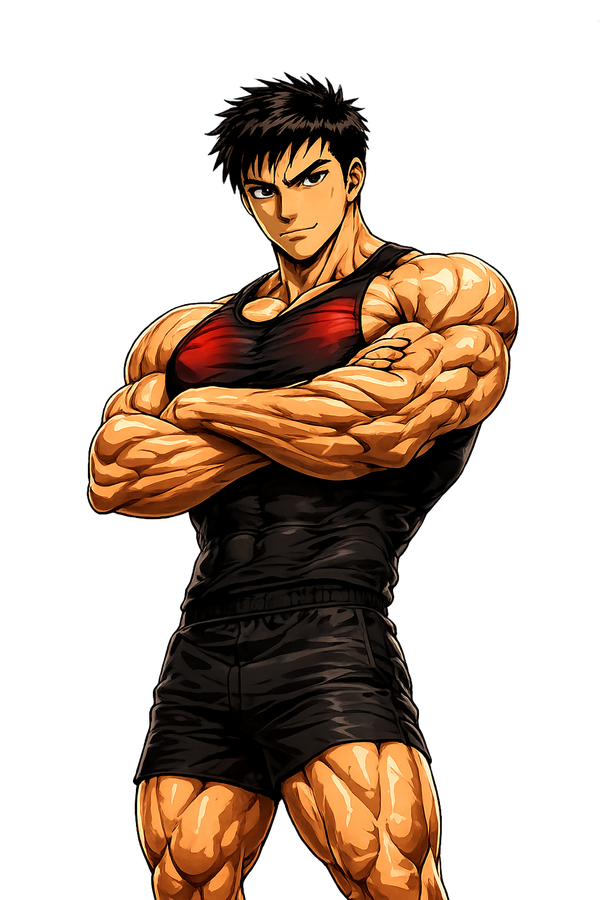
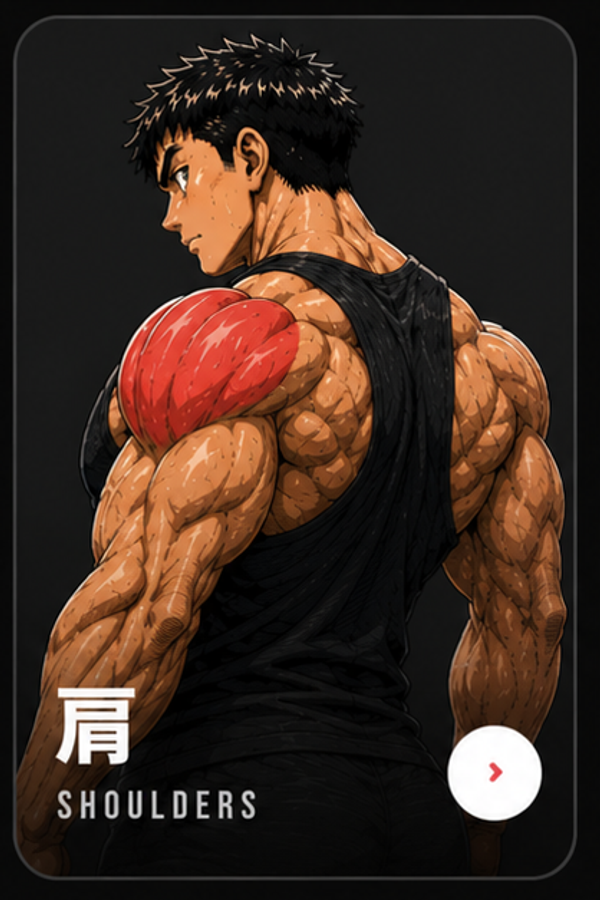
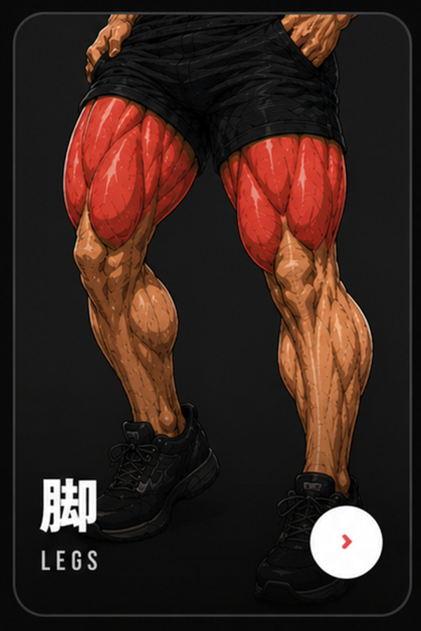

CORE
24
PRIVATE TRAINING GYM
--

101% RULE
読込中…
今日
0
kg
›
目標
101%
--
kg
--
0
日連続
DAILY
0
週連続
週3回達成
記録を始めて連続記録を作ろう。
前回のトレーニング
--
▣
記録がありません
セットを記録すると表示されます
--
VOLUME
部位
3日前
›
5日前
›
2日前
›
4日前
›
6日前
›
7日前
›
--

›
--

›
今週の統計
THIS WEEK
VOLUME
65.2
K KG
CALORIES
2,840
KCAL
SESSIONS
5
/7
実績
ACHIEVEMENTS
すべて見る ›
3日連続
WEEK STREAK
10万kg
TOTAL VOLUME
初挑戦
BENCH 80KG
--
NEXT
最近の履歴
RECENT
全履歴 ›
⌂
ホーム
▤
記録
☰
メニュー
◢
進捗
⚙
設定